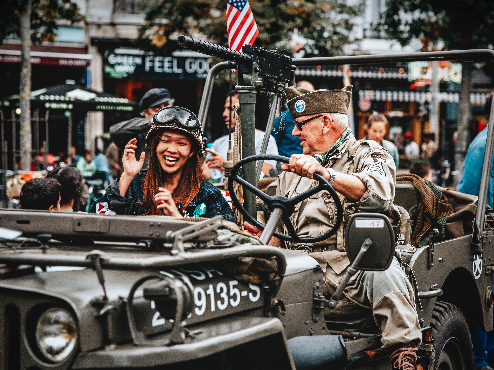

Veteran's Groups
Here are links to veterans associations for WW2. These are the people that fought in the war and they deserve all of the credit. These links provide additional information and more history so feel free to check them out if you are interested.
